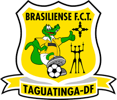

2x1C(1X0)F 2x1C(1X0)F

|
| A Copa do Brasil de Futebol de 1995 foi a sétima edição da Copa do Brasil. Ela foi disputada entre 14 de Fevereiro e 21 de junho de 1995. O Sport Club Corinthians Paulista, de São Paulo-SP, foi o campeão Invicto, vencendo na final o Grêmio |
2x1C(1x1)F

|
| A final da Copa do Brasil de Futebol de 2002 foi a 14ª final dessa competição brasileira de futebol organizada pela Confederação Brasileira de Futebol (CBF). Disputaram o título do torneio Corinthians e Brasiliense em duas partidas. O primeiro duelo ocorreu no dia 8 de maio, no Estádio do Morumbi, em São Paulo. Já o segundo confronto aconteceu no dia 15 de maio, na Boca do Jacaré, em Taguatinga. |
2x0C(2X2)F
|
| A final da Copa do Brasil de Futebol de 2009 foi a 21ª final dessa competição brasileira de futebol organizada pela Confederação Brasileira de Futebol (CBF), decidida por Corinthians e Internacional em duas partidas. O primeiro duelo ocorreu no dia 17 de junho de 2009, no Estádio do Pacaembu, em São Paulo. Já o segundo confronto aconteceu no dia 1 de julho de 2009, no Estádio Beira-Rio, em Porto Alegre. |